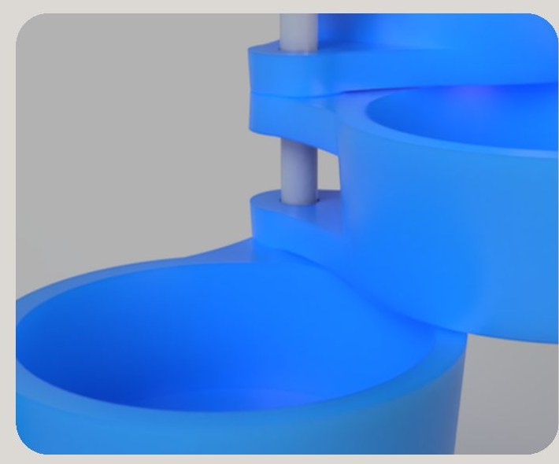
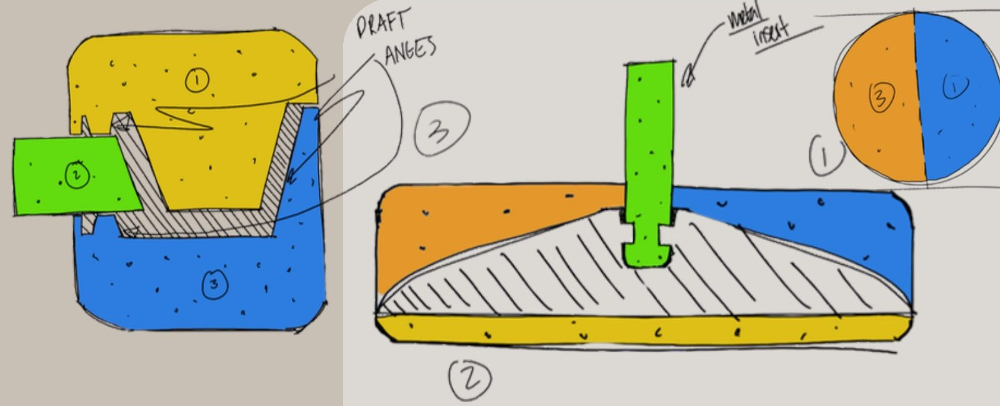
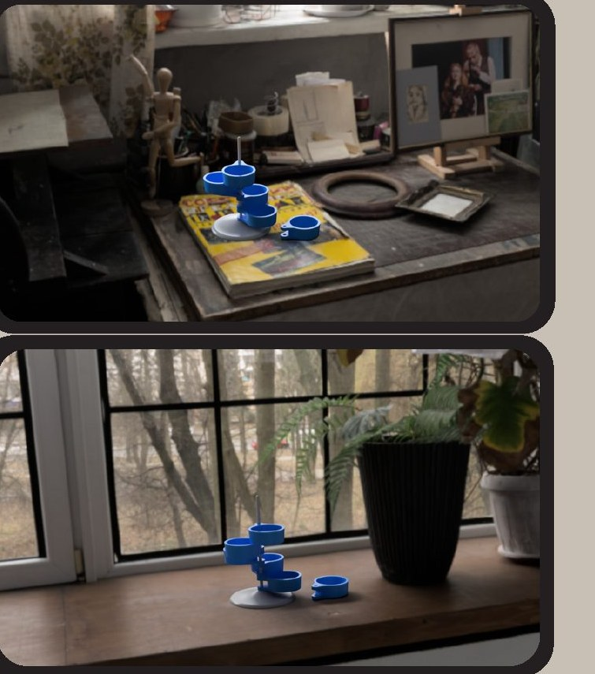

The brief
Design a functional, good-looking desktop storage unit made by injection moulding, with at least two distinct parts suited to two-tone moulding without double injection.
It's for students and young professionals with small home offices or shared studio desks, who want tidy, modular storage with a clean, modern look.
Our goals: compact and stable, two parts in distinct colours, and easy to mould within standard constraints of walls ≥ 3 mm, 3° draft angles and no undercuts.
Concepts
Each of us sketched ideas, then we developed three concepts:
- Compact storage: rings that rotate around a hinge pin, for nuts, bolts, staples and tacks.
- Stackable tower: modular containers that stack and pull apart. It taught us a lot about draft angles and parting lines, but its bevelled edge wasn't suited to moulding.
- Rotating tower: closest to the final. Cups swing around a central axis, so they can't come apart and get lost.
After our review we added proper draft angles to the rod holes and a metal insert where the rod meets the base.

Designing for the mould
The five identical ABS cups each have a hinge hole for the rod. We angled the draft so the hole is wider at the bottom, which makes it easier to drop a cup back onto the rod. The draft does a job for the user as well as for the mould.
The steel rod is insert-moulded into the base: it's placed in the mould and the plastic is injected around it, creating a strong bond and a durable rotation axis where plastic alone would wear. The wide, rounded base, inspired by Belkin's wireless charger stand, keeps the tower from tipping.

- Sizeabout 160 H × 111 W × 116 D mm
- Parts5 cups, 1 base (ABS), 1 steel rod
- BaseØ100 mm
- TeamLuke Busch, Kevin Chung, Luke Schicker
In use

What we'd change next
Pros: modular, small footprint, customisable and cheap to make. Cons: a bulky shipping size, and it needs the metal rod insert.
Next steps would be bigger cups for larger items, cup inserts such as a scissor slot, and a threaded rod so users can swap in different lengths.
Portfolio
Pages from the group portfolio. Click a page to open it.


CAD files
I made the technical drawings with Luke Busch.